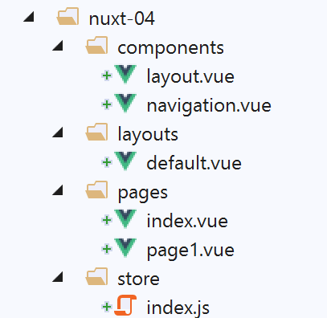
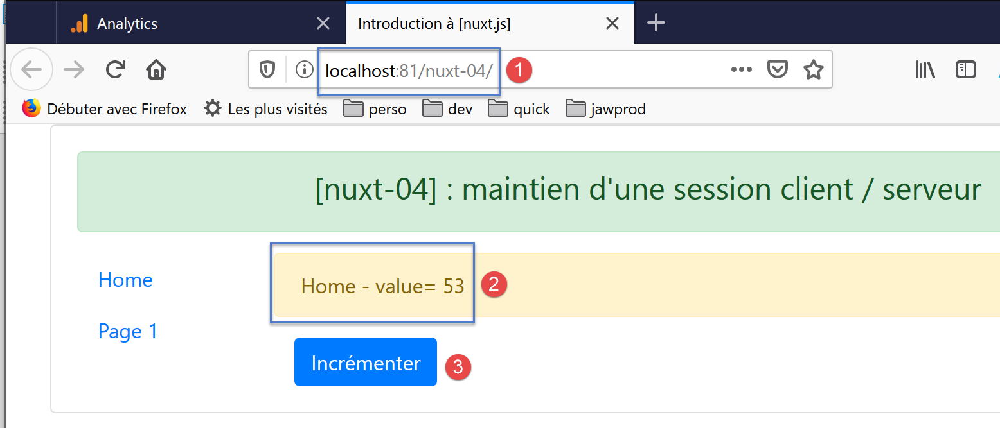
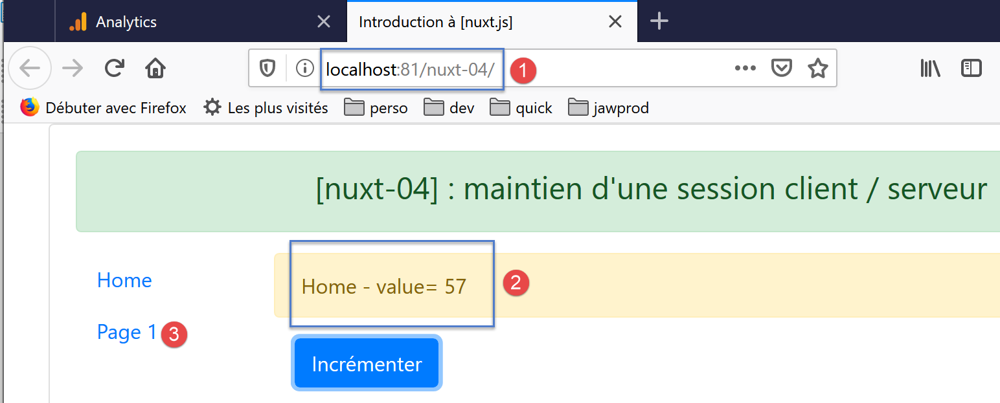
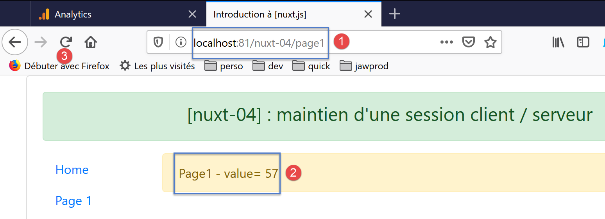
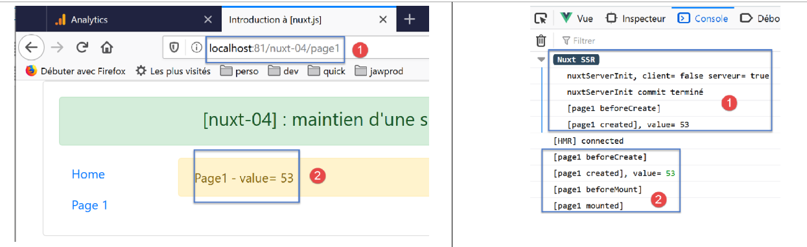
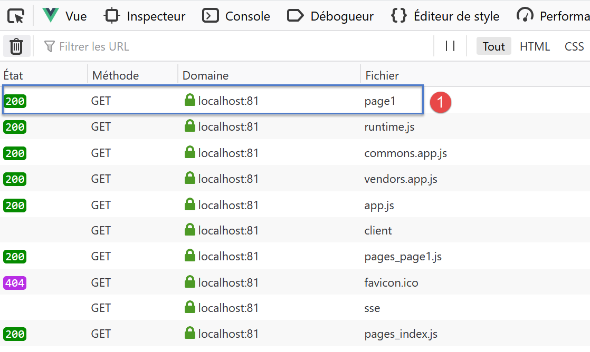

7. Exemple [nuxt-04] : maintien d’une session client / serveur
Le projet [nuxt-04] aborde le problème du maintien d’une session client / serveur. On reprend le projet [nuxt-03] avec les modifications suivantes :
- la page [index] aura un bouton qui permettra d’incrémenter le compteur du store [Vuex] ;
- la page [page1] reste inchangée ;
- on voudrait que lorsqu’une page est demandée à la main au serveur, celui-ci renvoie la page demandée avec un store [Vuex] qui aurait pour valeur de compteur, la dernière valeur que celui-ci avait côté client ;
Le projet [nuxt-04] est initialement créé par recopie du projet [nuxt-03] :

Seule la page [index] change :
<!-- page [index] -->
<template>
<Layout :left="true" :right="true">
<!-- navigation -->
<Navigation slot="left" />
<!-- message-->
<template slot="right">
<b-alert show variant="warning"> Home - value= {{ value }} </b-alert>
<!-- bouton -->
<b-button @click="incrementCounter" class="ml-3" variant="primary">Incrémenter</b-button>
</template>
</Layout>
</template>
<script>
/* eslint-disable no-undef */
/* eslint-disable no-console */
/* eslint-disable nuxt/no-env-in-hooks */
import Layout from '@/components/layout'
import Navigation from '@/components/navigation'
export default {
name: 'Home',
// composants utilisés
components: {
Layout,
Navigation
},
data() {
return {
value: 0
}
},
// cycle de vie
beforeCreate() {
// client et serveur
console.log('[home beforeCreate]')
},
created() {
// client et serveur
this.value = this.$store.state.counter
console.log('[home created], value=', this.value)
},
beforeMount() {
// client seulement
console.log('[home beforeMount]')
},
mounted() {
// client seulement
console.log('[home mounted]')
},
// gestion des évts
methods: {
incrementCounter() {
console.log('incrementCounter')
// incrément du compteur de 1
this.$store.commit('increment', 1)
// chgt de la valeur affichée
this.value = this.$store.state.counter
}
}
}
</script>
- ligne 10 : on a ajouté un bouton pour incrémenter le compteur du store [Vuex] ;
- ligne 54 : la méthode qui gère le [clic] sur le bouton [Incrémenter] ;
- ligne 57 : le compteur du store est incrémenté de 1 ;
- ligne 59 : la valeur du compteur est affectée à la propriété [value] afin qu’elle soit affichée par la ligne 8 ;
On exécute le projet [nuxt-04] avec le fichier [nuxt.config.js] suivant :
// répertoire du code source
srcDir: 'nuxt-04',
// routeur
router: {
// racine des URL de l'application
base: '/nuxt-04/'
},
// serveur
server: {
// port de service, 3000 par défaut
port: 81,
// adresses réseau écoutées, par défaut localhost : 127.0.0.1
// 0.0.0.0 = toutes les adresses réseau de la machine
host: 'localhost'
}
A l’exécution la première page affichée est la suivante :

En utilisant plusieurs fois le bouton [3], on a la nouvelle page suivante :

Si on utilise le lien [3], on a la page suivante :

- en [2], la page [page1] [1] affiche bien la valeur du compteur ;
Maintenant, rafraîchissons la page avec [3]. La nouvelle page est la suivante :

- en [2], on a perdu la valeur courante du compteur. On est revenu à sa valeur initiale ;
Ce résultat est tout a fait compréhensible si on regarde les logs :
- en [1], le serveur a réexécuté la fonction [nuxtServerInit]. Or celle-ci est la suivante :
La ligne 28 affecte la valeur 53 au compteur.
Examinons la requête HTTP faite par le navigateur lorsqu’on a rafraîchi la page [page1] :

On voit qu’outre la page [page1] [1], le client demande un certain nombre de scripts au serveur. On notera les scripts [pages_index, pages_page1] qui sont les scripts associés aux pages [index, page]. Ces scripts sont fournis à chaque requête au serveur quelque soit la page demandée ;
En [1], la page [page1] est demandée au serveur avec la requête HTTP suivante :
On voit que cette requête ne transmet aucune information au serveur. Celui-ci n’a donc aucun moyen de connaître l’état du store [Vuex] côté client. Il aurait fallu pour cela que le client lui envoie cette information.
Dans le projet suivant [nuxt-05] nous utilisons un cookie pour que le client puisse envoyer de l’information au serveur lorsque celui-ci est sollicité.